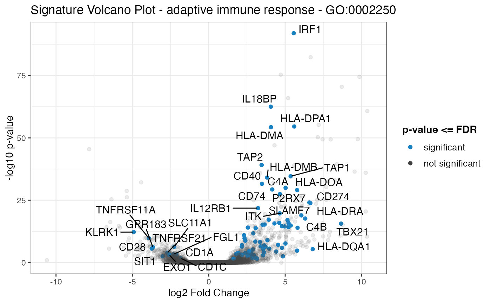

Plot a volcano plot for the geneset of the provided data, with the remaining genes as shaded dots in the background of the plot.
signature_volcano( res_de, res_enrich, annotation_obj = NULL, gtl = NULL, geneset_id = NULL, genelist = NULL, FDR = 0.05, color = "#1a81c2", volcano_labels = 25, plot_title = NULL )
| res_de | A |
|---|---|
| res_enrich | A |
| annotation_obj | A |
| gtl | A |
| geneset_id | Character specifying the gene set identifier to be plotted. |
| genelist | A vector of character strings, specifying the identifiers
contained in the |
| FDR | Numeric value, specifying the significance level for thresholding adjusted p-values. Defaults to 0.05. |
| color | Character string to specify color of filtered points in the plot. Defaults to #1a81c2 (shade of blue). |
| volcano_labels | Integer, maximum number of labels for the gene sets to be plotted as labels on the volcano scatter plot. Defaults to 25. |
| plot_title | Character string, to specify the title of the plot,
displayed over the volcano plot. If left to |
A plot returned by the ggplot() function
library("macrophage") library("DESeq2") library("org.Hs.eg.db") library("AnnotationDbi") # dds object data("gse", package = "macrophage") dds_macrophage <- DESeqDataSet(gse, design = ~line + condition)#>rownames(dds_macrophage) <- substr(rownames(dds_macrophage), 1, 15) dds_macrophage <- estimateSizeFactors(dds_macrophage)#># annotation object anno_df <- data.frame( gene_id = rownames(dds_macrophage), gene_name = mapIds(org.Hs.eg.db, keys = rownames(dds_macrophage), column = "SYMBOL", keytype = "ENSEMBL"), stringsAsFactors = FALSE, row.names = rownames(dds_macrophage) )#># res object data(res_de_macrophage, package = "GeneTonic") res_de <- res_macrophage_IFNg_vs_naive # res_enrich object data(res_enrich_macrophage, package = "GeneTonic") res_enrich <- shake_topGOtableResult(topgoDE_macrophage_IFNg_vs_naive)#>#>res_enrich <- get_aggrscores(res_enrich, res_de, anno_df) signature_volcano(res_de, res_enrich, anno_df, geneset_id = res_enrich$gs_id[1] )#> Warning: ggrepel: 48 unlabeled data points (too many overlaps). Consider increasing max.overlaps# alternatively # chemokine_list <- c("ENSG00000108702", # "ENSG00000172156", # "ENSG00000181374", # "ENSG00000276409" # ) # signature_volcano(res_de, # res_enrich, # anno_df, # genelist = chemokine_list # )